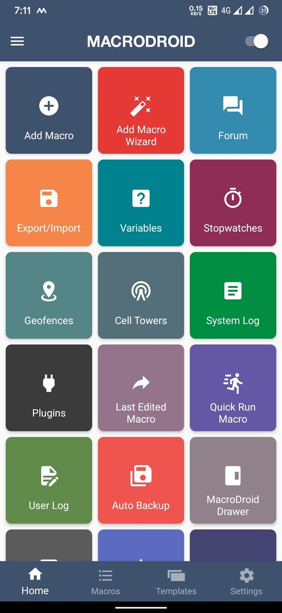
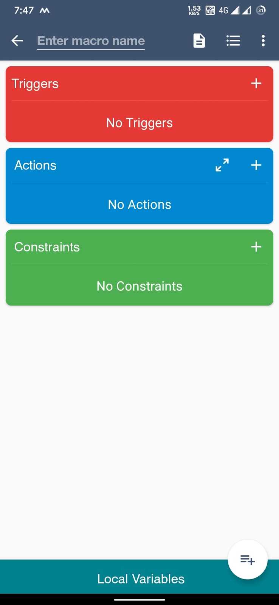
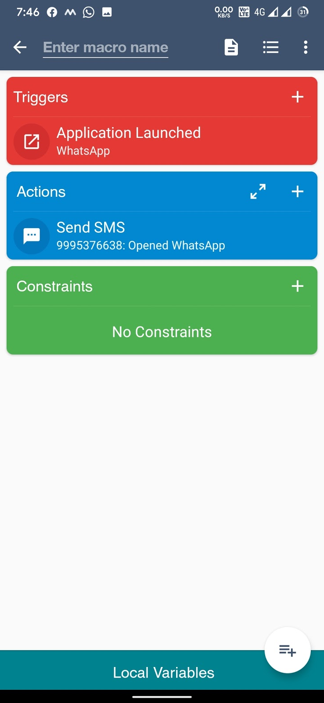
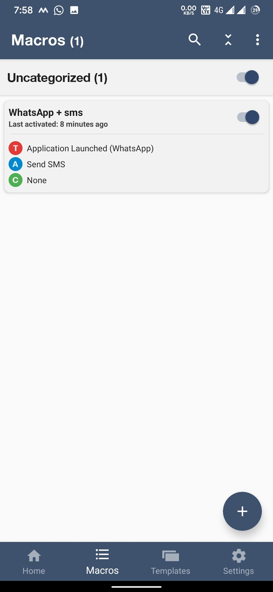
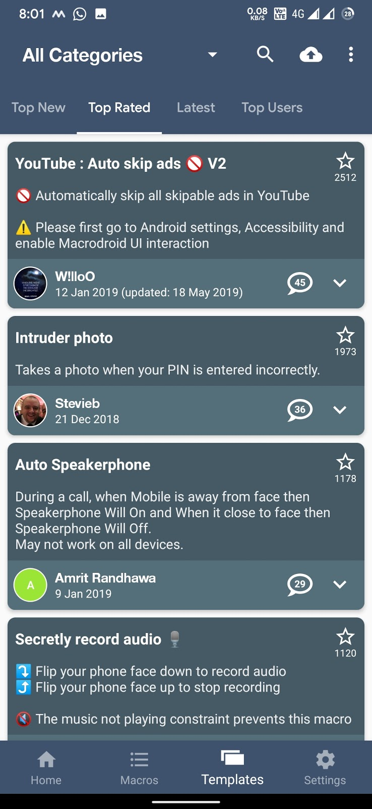

എന്താണ് MacroDroid?
നമ്മുടെ ആൻഡ്രോയ്ഡ് smartphone നെ ഒരു Pro-level ൽ കസ്റ്റമൈസ് ചെയ്യാൻ കഴിയുന്ന ടൂൾ ആണ് MacroDroid എന്നു വേണമെങ്കിൽ പറയാം.
(Customization എന്നതുകൊണ്ട് ഉദ്ദേശിച്ചത് തീമിങ് അല്ല കേട്ടോ... Activity based customization ആണ്)
ഉദാഹരണത്തിന്,
നമ്മുടെ ഫോണിൽ വാട്സാപ്പ് തുറക്കുമ്പോൾ തന്നെ ഫോണിൽ നിന്ന് നമ്മൾ കൊടുത്ത ഒരു നമ്പറിലേക്ക് 'വാട്സാപ്പ് തുറന്നേ' എന്നൊരു മെസ്സേജ് പോണം എന്നു കരുതുക.
ഈയൊരു കാര്യം നമുക്ക് MacroDroid വഴി സെറ്റ് ചെയ്യാം.
(ലളിതമായി ഒരു ഉദാഹരണം പറഞ്ഞതാണ്, എന്തിനാ വാട്സാപ്പിൽ കയറുമ്പോ വാട്സാപ്പ് തുറന്നേ എന്ന് മെസേജ് പോകുന്നത് എന്ന് ചോദിച്ചേക്കല്ലേ)
ഇനി ഇത് എങ്ങനെ സെറ്റ് ചെയ്യും എന്ന് നോക്കാം...
MacroDroid ആപ്പ് തുറന്ന് അതിലെ Add Macro എന്ന tile ഓപ്പൺ ചെയ്യുക.

അപ്പോൾ അതിൽ Trigger, Action, Constraints എന്നിങ്ങനെ 3 ടൈലുകൾ കാണാം.

"വാട്സാപ്പ് തുറക്കുമ്പോൾ (trigger) ഫോണിൽ നിന്ന് sms പോണം (action)"
എന്നതാണ് നമുക്ക് ചെയ്യിക്കേണ്ടത്.
So, Trigger എന്നുള്ളിടത്ത് Application launched > WhatsApp എന്നും Action എന്നുള്ളിടത്ത് Messaging > Send sms എന്നും സെറ്റ് ചെയ്യുക.
സേവ് ചെയ്യാനായി താഴെ വലത് ഭാഗത്തുള്ള + ഐക്കൺ ക്ലിക്ക് ചെയ്യുക.

മൂന്നാമത്തെ ടൈൽ Constraints എന്നുള്ളത് മുകളിലെ action ഒരു പ്രത്യേക സമയത്ത് മാത്രം ചെയ്താൽ മതി എന്നുണ്ടെങ്കിൽ (ഉദാ: ഫോൺ ചാർജ്ജിന് ഇടുമ്പോൾ) മാത്രം സെറ്റ് ചെയ്താൽ മതി. (Optional)
ഇങ്ങനെ സേവ് ചെയ്ത macros ആപ്പിന്റെ home page ൽ താഴെയായി macros എന്നു കാണുന്ന ടാബിൽ ഉണ്ടാവും. Enable / disable ചെയ്യാവുന്നതാണ്.

ശേഷം നമ്മുടെ ഫോണിൽ വാട്സാപ്പ് തുറന്നാൽ അപ്പോൾ തന്നെ നമ്മൾ കൊടുത്ത നമ്പറിലേക്ക് നമ്മൾ നേരത്തെ സെറ്റ് ചെയ്ത മെസ്സേജ് sent ആവും.
ഇത് basic level actions ആണ്. ഇങ്ങനെ ഒരുപാട് actions നമുക്ക് തന്നെ സെറ്റ് ചെയ്യാൻ കഴിയും.
ഉദാ: ഇങ്ങോട്ട് ring എന്ന് sms വന്നാൽ ഫോൺ ഉച്ചത്തിൽ ring ചെയ്യുക, പ്രത്യേക ലൊക്കേഷനിൽ എത്തുമ്പോൾ vibrate മോഡ് ആക്കുക etc...
ഇത് കൂടാതെ developers ഉണ്ടാക്കി പബ്ലിഷ് ചെയ്ത ധാരാളം pro level മാക്രോസും add ചെയ്യാം....
Home പേജിൽ താഴെയുള്ള templates എടുക്കുക.

അതിലെ top rated ഐറ്റംസ് നോക്കൂ...
1. യൂട്യൂബിലെ ads ഓട്ടോമാറ്റിക് ആയിട്ട് skip ആവാനുള്ള module
2. നമ്മുടെ ഫോണിന്റെ ലോക്ക് wrong ആയി enter ചെയ്യുന്ന ആളുടെ ഫോട്ടോ എടുക്കാനുള്ള module
3. Call വരുമ്പോ ചെവിയിൽ നിന്ന് മാറ്റിയാൽ ഉടനെ അത് speaker ൽ ആവാനുള്ള module
4. Call എന്ന് sms അയച്ചാൽ അയക്കുന്ന നമ്പറിലേക്ക് secret ആയിട്ട് call വരാനുള്ള module
5. Record എന്ന് sms അയച്ചാൽ അപ്പോൾ തന്നെ വോയ്സ് റെക്കോർഡ് ചെയ്യിക്കാനുള്ള module
6. ഉപയോഗിക്കാത്തപ്പോ wifi bluetooth ഒക്കെ തനിയെ ഓഫാക്കാനുള്ള module...
അങ്ങനെ ഒരുപാട് ഉണ്ട്...
ഓരോന്നിലും ടച്ച് ചെയ്ത് + ഐക്കൺ അമർത്തി macros ലേക്ക് add ചെയ്യാം.
ട്രൈ ചെയ്തു നോക്കൂ...
NB: ആൻഡ്രോയ്ഡ് 10 മുതൽ സെക്യൂരിറ്റി issues ഉള്ളതിനാൽ ചില മോഡ്യൂളുകൾ വർക്ക് ആയേക്കില്ല.
Android 10+ Clipboard access ഒക്കെ deny ചെയ്തതുകൊണ്ട് ലിങ്ക് കോപ്പി ചെയ്തുള്ള YouTube, Facebook video downloading ഒന്നും നടക്കില്ല.
- DeOn -